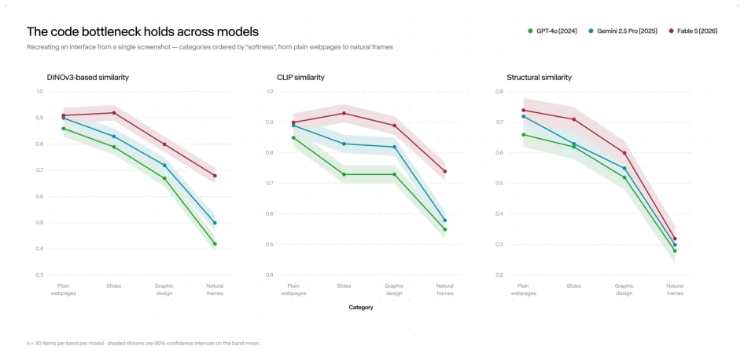
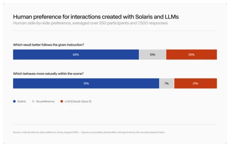
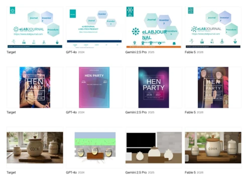
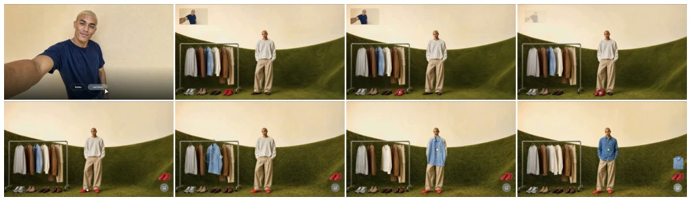
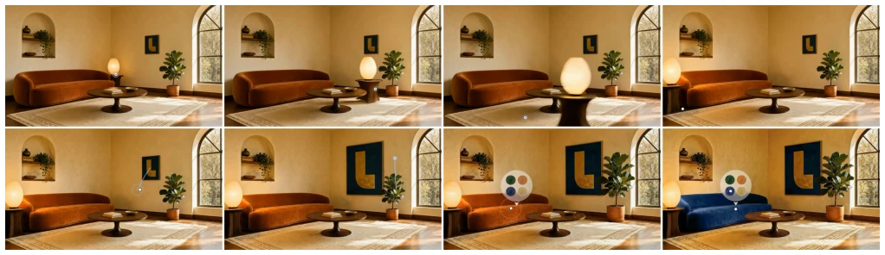
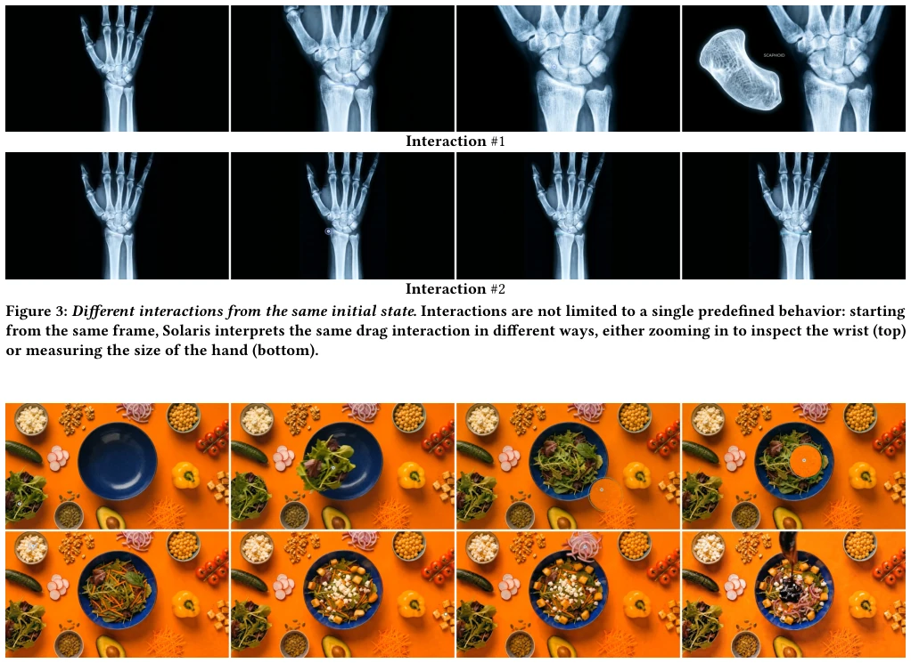
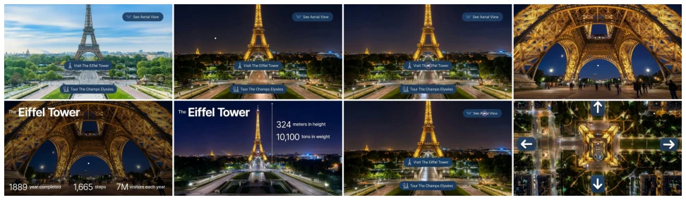
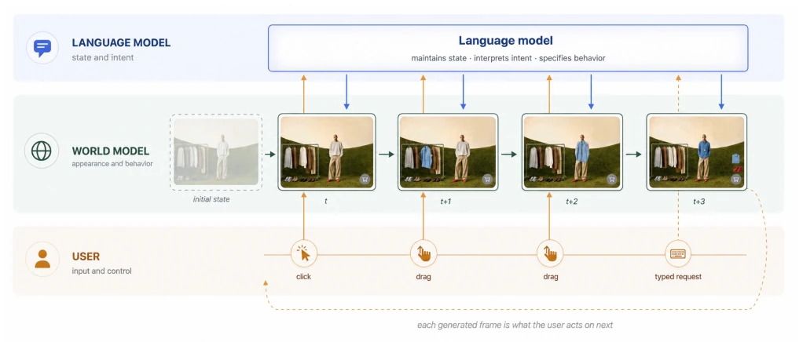

Solaris: Towards Interfaces That Are Generated, Not Coded
Yuval Alaluf, Omri Avrahami, Guy Bukchin Leshem, Michal Geyer, Kfir Goldberg, Elad Richardson abspdf
论文点评Review
Solaris 试图用“生成式”彻底取代“编码式”界面，这听起来像是给软件行业做了一次彻底的“去代码化”手术。它本质上是一个能理解鼠标拖拽并实时画帧的世界模型，配合大语言模型做意图推理。亮点在于打破了传统 UI 必须预先定义状态的僵化，让界面像游戏场景一样“活”起来，无需中间表示即可响应交互。但毒舌一点看，这不过是把视频生成模型套上了 UI 的外壳，所谓的“实时”可能只是延迟在可接受范围内的幻觉。文本渲染仍是硬伤，且长期交互的一致性挑战巨大。这更像是一个炫酷的 Demo，而非成熟的工程方案，毕竟让 AI 凭空生成可交互的复杂逻辑，目前还停留在“看起来像那么回事”的阶段，离真正替代操作系统还有一段距离。
Solaris attempts to completely replace 'coding-based' interfaces with 'generative' ones, which sounds like performing a thorough 'code-removal' surgery on the software industry. Essentially, it is a world model capable of understanding mouse drag-and-drop and rendering frames in real-time, paired with a large language model for intent reasoning. The highlight lies in breaking the rigidity that traditional UIs must have pre-defined states, making the interface 'alive' like a game scene, responding to interactions without intermediate representations. But to be a bit cynical, this is merely putting a video generation model inside a UI shell; the so-called 'real-time' might just be an illusion within acceptable latency. Text rendering remains a significant flaw, and the challenge of consistency in long-term interaction is huge. This is more like a cool Demo rather than a mature engineering solution; after all, having AI generate complex interactive logic from scratch currently remains at the stage of 'looking plausible,' and there is still a long way to go before truly replacing an operating system.
Existing digital interfaces rely on code as an intermediate representation, causing information loss from visual design to functional implementation, and interaction behaviors are pre-locked, meaning software release becomes a lossy compression of the possible interaction space. Although existing works have attempted to generate interfaces, such as NeuralOS [6] simulating desktops, ViMo [4] generating App screenshots, and CUWM [3] predicting Office states, they all reproduce based on existing software and cannot create new behaviors. Solaris aims to solve this pain point: traditional interfaces are 'dead' and cannot adapt to unforeseen interactions; whereas generative interfaces should dynamically evolve based on user intent. Existing LLM agents struggle to handle visually complex tasks because code interfaces limit generalization capabilities. Solaris attempts to eliminate intermediate representations, making vision the interface, achieving an open interaction experience, enabling the interface to continuously adapt to user intent rather than remaining fixed.

Figure 10: Reconstruction fidelity across increasing visual complexity. Across multimodal language models, reconstruction fidelity decreases as visual complexity increases, highlighting the information lost when visual interfaces are translated through an intermediate representation.

Figure 11: Interface world models produce more natural inter- actions. Participants preferred Solaris over coded interfaces both for following the requested interaction and, by an even larger margin, for behaving naturally within the scene, high- lighting the ability of interface world models to generate interactions that remain coherent with the environment.
方法Method
Solaris 采用三层架构：用户输入层、语言模型层、世界模型层。用户通过鼠标键盘操作，语言模型（LLM）负责解析意图、维护会话状态并决定交互含义（如拖拽是缩放还是测量）。世界模型基于 Gen-4.5 [8] 视频生成模型，负责渲染视觉帧。核心创新在于实时性优化：将扩散模型转为自回归生成，每帧仅依赖前一帧；通过少步蒸馏加速推理；并在自身输出上训练以保持长交互下的视觉质量。这种设计将推理与渲染解耦，LLM 决定“做什么”，世界模型决定“长什么样”。输入不仅是图像，还包括交互信号，模型学习动作与视觉结果的因果关系，无需显式编程即可响应点击、拖拽等操作。系统支持连续生成，无需预设屏幕或模板，文本提示指定交互含义，使界面成为动态环境而非静态页面。
Solaris adopts a three-layer architecture: user input layer, language model layer, and world model layer. Users operate via mouse and keyboard; the language model (LLM) is responsible for parsing intent, maintaining session state, and determining interaction meaning (e.g., whether a drag is zooming or measuring). The world model is based on the Gen-4.5 [8] video generation model, responsible for rendering visual frames. The core innovation lies in real-time optimization: converting diffusion models to autoregressive generation, where each frame depends only on the previous one; accelerating inference through few-step distillation; and training on its own outputs to maintain visual quality under long interactions. This design decouples reasoning and rendering; the LLM decides 'what to do,' and the world model decides 'what it looks like.' Inputs are not just images but also include interaction signals; the model learns the causal relationship between actions and visual results, responding to clicks, drags, etc., without explicit programming. The system supports continuous generation, requiring no preset screens or templates; text prompts specify interaction meaning, making the interface a dynamic environment rather than a static page.

Figure 9: Reconstructing interfaces. Given a single screenshot, state-of-the-art multimodal language models [1, 2, 5] attempt to reconstruct the visual interface through code. Reconstruc- tion becomes increasingly difficult as visual complexity in- creases, from a plain webpage (top), to an image-heavy design (middle), to a natural image (bottom).
实验Experiments
实验分为两部分。首先是界面重建评估，对比多模态 LLM 从截图重建界面的能力，使用 SSIM 和 DINOv3 [9] 特征衡量信息保留度，结果显示视觉复杂度越高，传统方法信息丢失越严重。其次是用户研究，250 名参与者对比 Solaris 与基于 Claude Opus 5 [1] 的代码界面。在遵循指令方面，Solaris 获 62% 偏好（代码界面 25%）；在场景自然行为方面，Solaris 获 72% 偏好（代码界面 21%）。结果表明生成式模型能保持场景连贯性，但论文也承认文本渲染、长期一致性和可访问性仍是局限。实验验证了消除中间表示能保留视觉语义状态，且生成式交互比代码界面更具自然感。
Experiments are divided into two parts. First is interface reconstruction evaluation, comparing the ability of multimodal LLMs to reconstruct interfaces from screenshots, using SSIM and DINOv3 [9] features to measure information retention; results show that the higher the visual complexity, the more severe the information loss in traditional methods. Second is user study, where 250 participants compared Solaris with code-based interfaces based on Claude Opus 5 [1]. In terms of following instructions, Solaris received 62% preference (code interface 25%); In terms of natural behavior in scenarios, Solaris received 72% preference (code interface 21%). Results indicate that generative models can maintain scene coherence, but the paper also admits that text rendering, long-term consistency, and accessibility remain limitations. Experiments verify that eliminating intermediate representations can retain visual semantic states, and generative interaction feels more natural than code interfaces.
其他图片Other Figures

Figure 1: A virtual clothing store experience. Solaris turns a visual environment into an interactive shopping experience: starting from a selfie, the user can try on products by dragging them directly onto themselves. Here, the user selects a pair of red shoes and then a blue shirt, with each item updating their appearance and being added to the cart.

Figure 2: An interior room design experience. The interface behaves like a living environment: the user can directly control objects and observe the scene respond in place. Here, the user moves a lamp, resizes the painting and plant, and applies a new fabric to the sofa.

Figure 4: Building a salad. The user builds a salad directly in the scene by dragging ingredients into the bowl. Rather than selecting ingredients from a menu, they are arranged throughout the scene for direct interaction.Figure 5: Interactive Principles of Combustion courseware. Rather than presenting a static explanation, Solaris turns the lesson into an interactive experience. The user can experiment with different materials by dragging a flame onto them and directly observe how each reacts to fire.

Figure 6: Navigating a real-world scene. Rather than navigating between predefined views, the user explores the Eiffel Tower directly within the generated environment: changing the time of day, learning about the landmark, and viewing it from different perspectives while moving seamlessly through the scene.Figure 7: Exploring a product through direct interaction. The product itself becomes interactive: the user turns on the car’s lights, drags the car to view it from different angles, and opens the hood to explore its internal components.

Figure 8: How Solaris runs. Solaris is organized as three levels. The user acts on the frame with mouse and keyboard, the language model holds the state of the session and specifies what each action should mean, and the world model executes that intent, generating both the appearance and the behavior of the result.